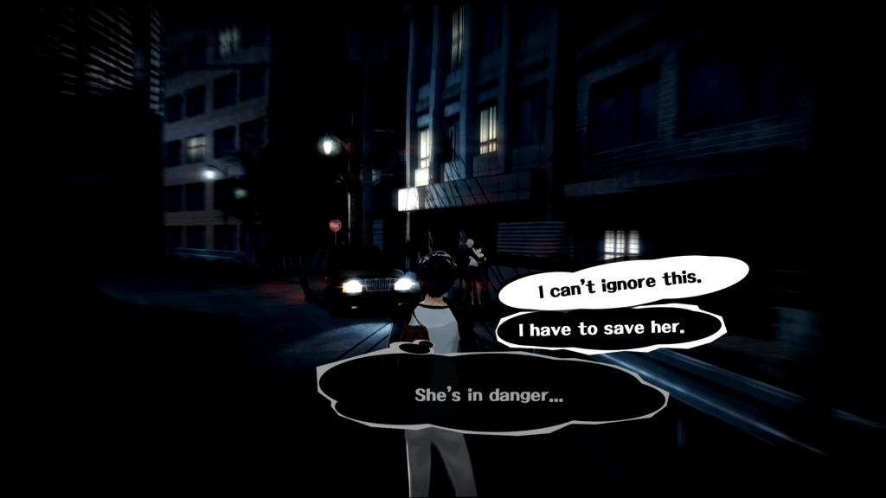
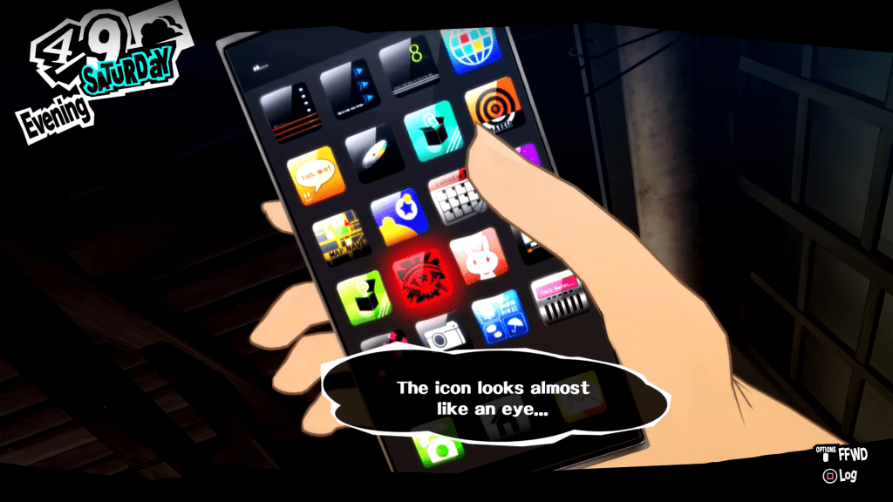
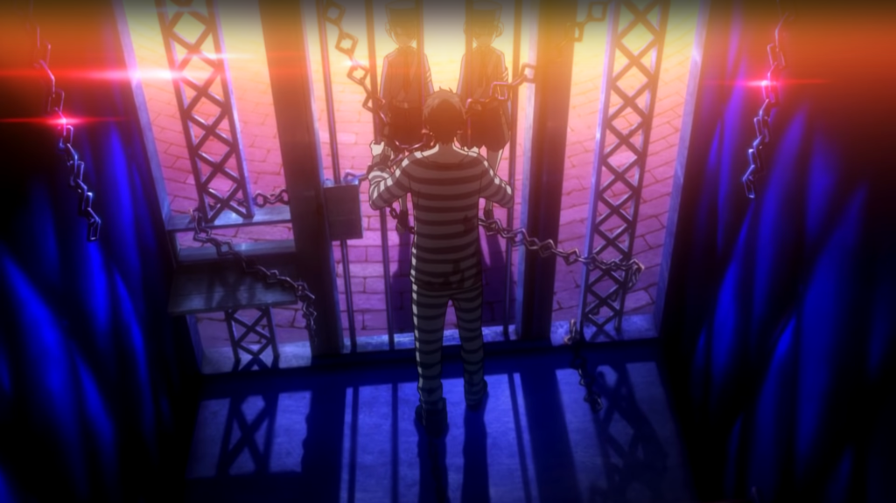
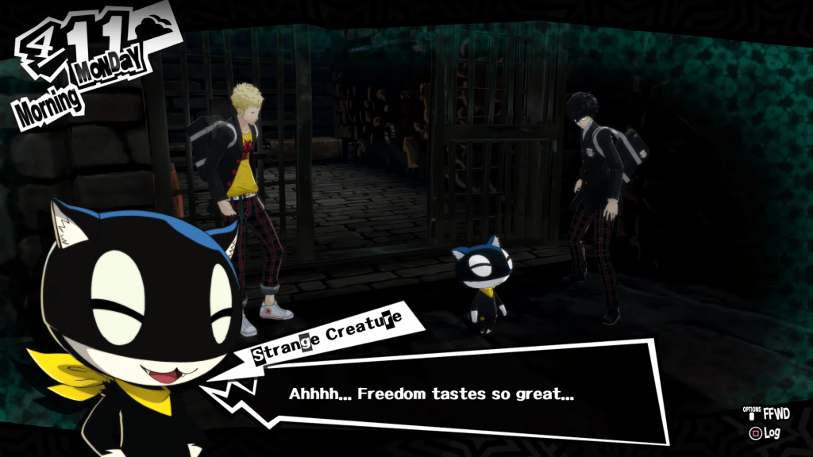

ในเนื้อเรื่องของ Persona5 เป็นเรื่องราวของเด็กหนุ่มที่เข้าไปช่วยหญิงที่ถูกทำร้าย
แต่โชคไม่ดีที่คนที่ทำร้ายนั้นเป็นผู้มีอำนาจจึงส่งตำรวจมาจับเรา และให้ผู้หญิงคนนั้นว่าการเท็จ
เราจึงโดนทัณฑ์บนถูกส่งมาอยู่โตเกียวเพื่อรักษาความประพฤติ ทั้งๆที่เราไม่ได้ทำอะไรผิดเลย
และนี่ก็เป็นจุดเริ่มต้นของการกบฏของตัวเรา
และสิ่งนี้เองที่ทำเราได้รับพลังพิเศษมานั่นก็คือการเข้าไปยังโลกแห่งความคิด
(Cognitive World หรือ Metaverse)

เมื่อเราถูกย้ายมาโตเกียว ก็ต้องมาเข้าโรงเรียนใหม่ ซึ่งโรงเรียนแห่งนี้เอง ที่ทำให้เราได้ใช้พลังเป็นครั้งแรก
เริ่มจากการที่เราเผลอหลุดเข้าไปใน Metaverse โดยไม่รู้ตัว พร้อมกับริวจิ เพื่อนของเรา
ทำให้เราได้พบกับ Palace ที่อาจารย์พละในโรงเรียนเป็นคนสร้างขึ้นมาในโลกแห่งความคิด
(ซึ่ง Palace เกิดจากการที่คนคนนึง มีความปราถนาอันบิดเพี้ยนไป จนกลายเป็นคนคุ้มคลั่ง หลงระเริงในอำนาจ)
เมื่อเราเข้าไปในพาเลซนี้ ก็ทำให้เราได้พบกับมอร์กาน่า แมวพูดได้ที่ไร้ความทรงจำ ซึ่งมอร์กาน่าก็จะมาอยู่กับเรา
และช่วยสอนเราเกี่ยวกับโลกแห่งความคิด โดยที่ตัวเองก็ไม่รู้ว่ารู้เกี่ยวกับโลกนี้ได้ยังไงเหมือนกัน
ซึ่งเรากับริวจิก็จะได้ปลุกพลังของ Persona ขึ้นมา จากการที่ยอมรับในตัวเอง

อาจารย์พละคนนี้หรือ Kamoshida เป็นโค้ชของทีมวอลเลย์
สามารถทำให้โรงเรียนคว้าแชมป์มาได้หลายสมัยจนไม่มีใครกล้าหือกล้าอือกับเขา สมาชิกทีมวอลเลย์โดนครูทำทารุณมากมาย
ถ้าเป็นผู้หญิงก็จะโดนลวนลาม แต่ก็ไม่มีใครกล้าทำอะไรเขา เพราะคิดว่าชีวิตคือการเล่นวอลเลย์เท่านั้น ผู้ปกครองหรือครูคนอื่นที่รู้ก็ไม่ทำอะไร
เพราะคิดว่ามันเป็นสิ่งจำเป็นต่อการได้แชมป์และชื่อเสียงของโรงเรียนจนเกิดเหตุการณ์ให้เด็กผู้หญิงคนนึงที่ถูกลวนลามบ่อยๆ
และเป็นเพื่อนสนิทของหนึ่งในตัวเอก กระโดดตึกพยายามจะฆ่าตัวตาย
นั่นคือสาเหตุที่ทำให้เราเลือกที่จะจัดการกับครูคนนี้ ด้วยการเข้าไปขโมย "สมบัติ" ในพาเลซของครู ตามคำแนะนำของมอร์กาน่า
โดยแอนน์ เพื่อนสนิทของผู้หญิงคนที่กระโดดตึกนี้ก็ตามเราเข้าไปในพาเลซด้วย และก็ปลุกพลัง Persona ของตัวเองขึ้นมาได้เหมือนกัน
เนื้อหาหลักๆของพาเลซนี้คือ “การกดขี่ของผู้ใหญ่ในโรงเรียน”
(การขโมย “สมบัติ” ในพาเลซของคนคนนึง จะทำให้คนคนนั้นที่เคยมีความปราถนาที่ผิดเพี้ยนไป กลับมาเป็นปกติ
แต่ก็จะทำให้คนคนนั้นรู้สึกผิดกับสิ่งที่ทำลงไปจนแทบทนไม่ไหวเช่นกัน
แต่ถ้าเรากำจัดตัวตนหรือชาโดว์ของเจ้าของพาเลซไปเลย คนคนนั้นก็จะเสียชีวิตในชีวิตจริงด้วย)

ซึ่งในการจะขโมยสมบัติได้ เราจะต้องทำให้เจ้าตัวรู้ตัวก่อน ถึงจะขโมยได้ ไม่งั้นสมบัติก็จะไม่ปรากฏ
เราจึงมีการส่ง Calling Card ให้เจ้าตัวรู้ตัวว่าเราจะไปขโมยจิตใจของเขาแล้วนะ แล้วจึงทำการขโมยได้
โดยรอบนี้เราก็แค่นำ Calling Card ไปติดที่บอร์ดโรงเรียน ก็ทำให้สมบัติปรากฏออกมา
เมื่อขโมยสมบัติแล้ว ครูก็สารภาพความผิดของตัวเอง ว่าทำร้ายร่างกายนักเรียน
และลวนลามนักเรียนหญิงด้วย ส่งผลให้โดนจับเข้าคุกไป และก็เป็นเรื่องราวใหญ่ในโรงเรียน
(จบ.EP1)